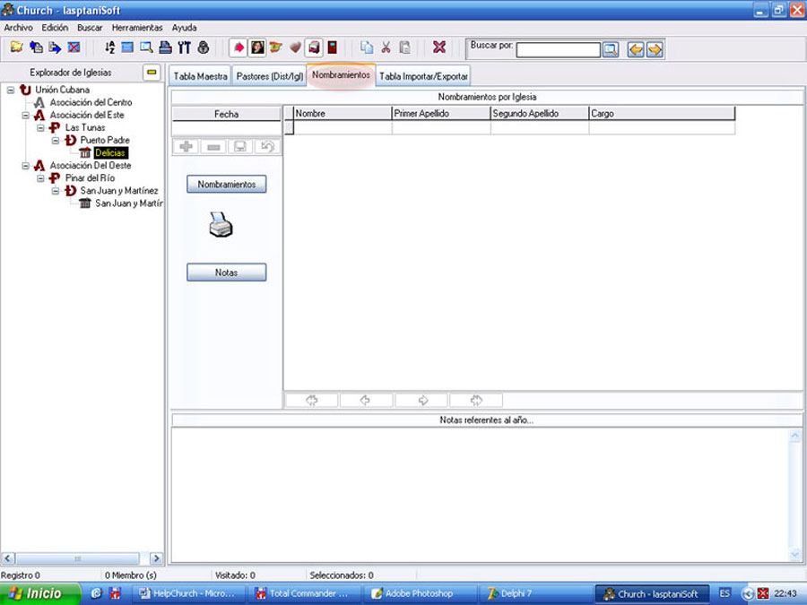

Nombramientos

Figura 11. La pestaña Nombramientos.
La figura 11 muestra la ventana Nombramientos, el apartado donde podrá guardar los nombramientos de cada iglesia de la base de Datos.
La ventana cuenta con una rejilla para la fecha cuando se efectúa el nombramiento, otra para los nombramientos en sí, un panel para las notas de ese año (fecha), y un panel donde se le da la posibilidad de imprimir un informe con los nombramientos y uno con las notas del año, este último lo puede usar para notas con relación a los nombramientos, juntas de iglesias, etc.